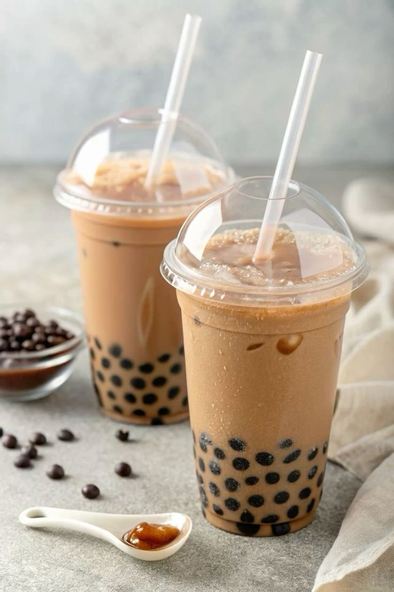
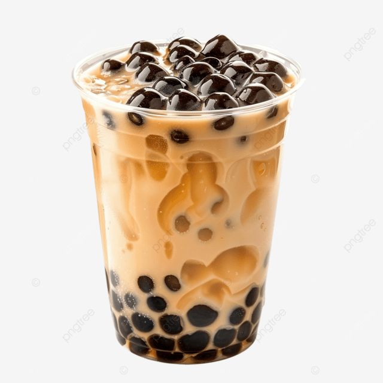
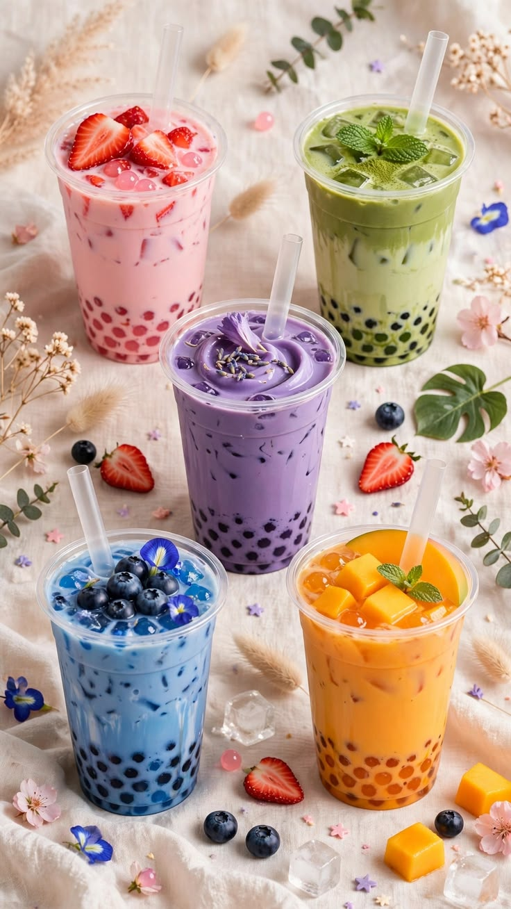
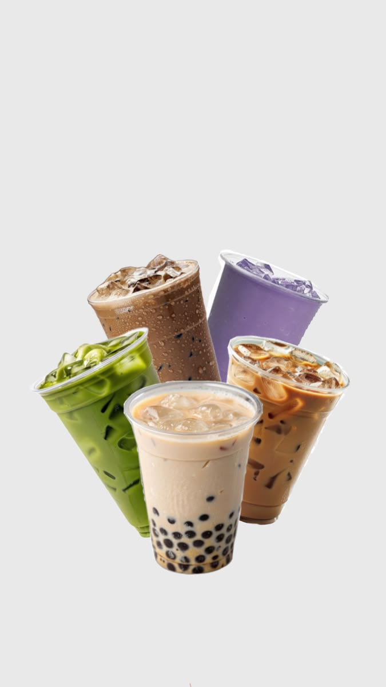

What is boba?
Boba is a drink that started in Taiwan. It is made of tea, milk or fruit, and little chewy balls at the bottom called tapioca pearls. You drink it with a wide straw so the pearls can come up too.


Popular flavors:
- Classic milk tea
- Taro
- Brown sugar
- Mango
- Matcha
- Strawberry


How to order
Pick a drink, choose how sweet you want it, choose how much ice, and add toppings. Then wait and enjoy!